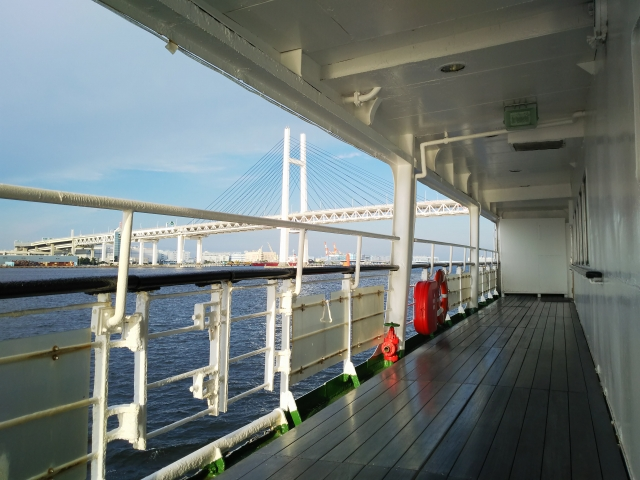
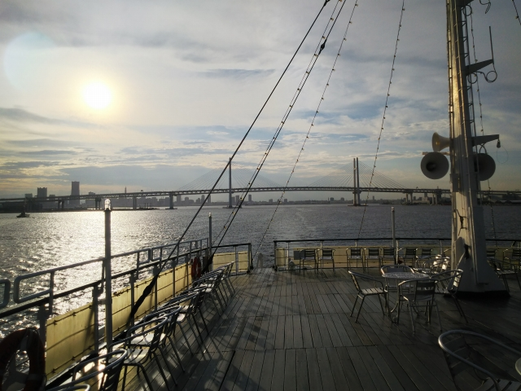

興津駅です。相も変わらす、青春１８で東上中です。
そろそろクロスシート車にあたるかと思ったら、ロ
ングシートのボロ電や・・・
関内駅に到着。横浜球場のそばとあって、大洋の、
いやベイスターズのヘルメットでお出迎えですね。
駅から１５分ほど歩いいくと、あれは高級クルーズ船の飛鳥かな
横浜大さん橋が見えてきました。
さすが横浜、桟橋の中もおしゃれな感じっすね。
今回の目的は、この船です。
ジャ～ン！ロウヤルウィング号です。
この船、元は関西汽船の「くれない丸」として別府
航路で活躍した船です。
ちなみに奥に停泊しているのは氷川丸です。
実はこの前乗ったさんふらわあの船内にも、写真が
飾られているような、有名な船だったようです。
今は横浜港をめぐるクルーズ船として活躍していて、
本当は食事とセットなんですが、甲板だけでいいな
ら乗船のみも可能です。
というわけで、一人で高級な食事を食べてもしょう
がないので、乗船のみで乗り込みました。

しかし乗船のみでも２８００円！１１０分コースと
はいえ、青春１８の１日分より高い！でも福岡で乗
ったクイーンビートルよりは安いか。
盛大にドラが鳴って出航です。といっても録音やっ
たけど・・・

横浜ベイブリッジをくぐります。

夕方とはいえ、かなりの暑さ。中に入れんのが恨めしい・・・。
とはいえトイレぐらいは許してくれると思うので、トイレに行くよ～という顔で、少し船内を探検。
豪華客船の片りんが見えるような・・・
１１０分も乗るから、羽田沖ぐらいまで行くのかと
思ったら、横浜港近辺をうろうろするだけでした。

やっぱり東は日の入りが早い！こっちの感覚やとまだ余裕ある時間やねんけど・・・
今日の宿は馬喰町。馬喰町といえば、昔クイズによ
く出てた駅ですが、今は日本で一番低いＪＲの駅で
はないと知ってショック！
日本で一番高い駅と姉妹駅みたいですが、この小汚い地下駅に白樺は似合
わんなぁ。もう一番低い駅やないし・・・
ちゅーか、まだ夜の９時にもなってないのに、無人駅でした。東京のど真
ん中でもそうなんかいな。
翌日。
早朝の浅草橋駅。馬喰町と浅草橋って、すぐそばな
んすね。浅草橋といえば、昔、過激派に焼き討ちに
あったニュースを思い出します。
さて、ここは西武池袋駅。今回は乗ったことのない、
大手私鉄の盲腸線シリーズとして、豊島園まで行っ
てみます。
西武といえば黄色、というイメージでしたが、黄色
い電車も少なくなってますね。
豊島園って、もっと都会の中にあるもんと思ってま
したが、わりとのどかな感じも残ってました。
豊島園はもう閉園してたんですね。
ファミリーランドが無くなった宝塚と似たような雰
囲気もなくはない駅周辺でした。
昔、パ・リーグの在阪球団の駅にあった、自社球団
の試合経過表示がまだ残ってました！
さて、次の訪問地は京急は金沢文庫駅です。この駅
での分割・併合は有名ですよね。今日は平日なので
朝の増結シーンを見にやってきました。
一度見てみたかったのですが、無茶苦茶要領いいっ
すね。前につなぐパターンと後ろにつなぐパターン
の両方があるのが驚きです。品川でどう処理してる
んやろ・・・
横浜方面に戻って、ここは黄金町駅。
実は、京急の前身のひとつである湘南電気鉄道の始
発駅だったところです。
横浜から金沢文庫までは、昔乗ってるはずやけど記憶があいまいなので、
改めて今回の乗車で京急完乗です！
次にやってきたのは金沢八景。

新交通システムの横浜シーサイドラインに乗ってみ
ます。
名前通り、海沿いを走るので景色が面白かったです。
さてと、お次は横浜の駅前のビルの中にある、原模
型博物館へ乗り込みます。ほんまは京急ミュージア
ムに行ってみたかったのですが、完全予約制かつ満
員でした。すごい人気やな、京急。
模型界ではかなり名の知れた有名人の個人博物館で
全てこの原さんが一から作った模型が展示・運転さ
れてます。
こだわりは岩佐模型店を上回ってます。集電は本物
通り架線から、とか、車輪は鉄で作る、とか、とに
かく本物と同じ設計思想で作ってます。
その分、精巧さには若干欠けるのですが、一から作
ったとなると、脱帽です。
さて、最後は残り少なくなった未乗私鉄のひとつ、
相模鉄道の初乗りです。
ふた昔前は、小汚いデザインのダサい電車が走って
たイメージですが、最近はかなり洗練されてきてい
ます。
確か昔は「準大手」という微妙な扱いでしたが、今
ではもう立派な大手私鉄の一員です。
乗ってみてビックリしたのが、沿線の雰囲気が阪急
宝塚線や今津線の雰囲気に似てたことです。緑の多
い住宅街を走ります。
湘南台に行ったあと、海老名に到着。オリジナルの
相模鉄道区間は完乗しました。乗り入れ区間につい
ては、いつかまた。
あとは相模線経由で帰るだけ。
時間があったので、降りてみたかった大磯で途中下車。
いい雰囲気の駅でした。
あとは帰るだけ。熱海からも、またまたロングシー
ト車。いつになったら、静岡エリアでクロスシート
車に巡り合うんやろ・・・

おまけ
帰ってきた翌々日、ＪＲ総持寺駅。撮り鉄があふれ
てました。（息子曰く、「激パ」という状態らしい
っす）
見慣れたＥＦ６６も、とうとう本業としてはラスト
ランだそうです。
これだけ人気なら、さよなら運転とかするかも・・・